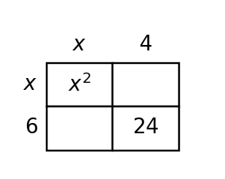

- Work with a partner.
- Both students stay engaged.
- Alternate who writes.
- Write clearly and large.
- Stay focused and collaborate.
- Fix mistakes and discuss.
- Partners alternate who writes while both describe the next step.
- The non-writer tracks the solution and catches arithmetic or notation mistakes.
- Pairs revise visibly when their first attempt does not match the answer key.
- One partner keeps the marker for the whole activity.
- The non-writer waits passively instead of contributing.
- Pairs erase mistakes without discussing what went wrong.
Determine whether each model represents growth or decay.
- $P(t)=1000(1.06)^t$
- $V(t)=24000(0.82)^t$
- $A(n)=4(3)^n$
- $M(h)=75(0.9)^h$
Determine whether each model represents growth or decay.
- $P(t)=1000(1.06)^t$
- $V(t)=24000(0.82)^t$
- $A(n)=4(3)^n$
- $M(h)=75(0.9)^h$
Solution: $1.06\gt1$, so $P(t)$ is growth. $0.82$ is between $0$ and $1$, so $V(t)$ is decay. $3\gt1$, so $A(n)$ is growth. $0.9$ is between $0$ and $1$, so $M(h)$ is decay.
The recursively defined sequence has $a_1=20$ and $a_{n+1}=0.5a_n$.
- Write the first four terms.
- Write an explicit equation for $a_n$.
The recursively defined sequence has $a_1=20$ and $a_{n+1}=0.5a_n$.
- Write the first four terms.
- Write an explicit equation for $a_n$.
Solution: The first four terms are $20,10,5,2.5$. Since $a_1=20$ and each term multiplies by $0.5$, an explicit equation is $a_n=20(0.5)^{n-1}$.
Compare the table and context below.
| Week | 0 | 1 | 2 | 3 |
|---|---|---|---|---|
| Views | 50 | 80 | 128 | 204.8 |
Context: A video starts with 50 views and grows by 60% each week.
Use the table and context together to write an equation, then explain how each representation supports the same model.
Compare the table and context below.
| Week | 0 | 1 | 2 | 3 |
|---|---|---|---|---|
| Views | 50 | 80 | 128 | 204.8 |
Context: A video starts with 50 views and grows by 60% each week.
Use the table and context together to write an equation, then explain how each representation supports the same model.
Solution: The table ratios are $80/50=1.6$, $128/80=1.6$, and $204.8/128=1.6$. Growing by $60\%$ also means multiplier $1.60$. The equation is $V(w)=50(1.6)^w$.
Design a short context that can be modeled by $y=64(0.75)^x$.
- State what x and y represent.
- Create a four-row table.
- Ask and answer one prediction question from your model.
Design a short context that can be modeled by $y=64(0.75)^x$.
- State what x and y represent.
- Create a four-row table.
- Ask and answer one prediction question from your model.
Solution: Answers vary. Example: A phone battery starts at $64\%$ and keeps $75\%$ of its charge each hour. Let $x$ be hours and $y$ be percent charge. A table is $(0,64),(1,48),(2,36),(3,27)$. Prediction: after $4$ hours, $y=64(0.75)^4=20.25$, so about $20.25\%$ remains.
List two integers with the given product and sum.
- product $12$, sum $7$
- product $-18$, sum $3$
- product $24$, sum $-10$
List two integers with the given product and sum.
- product $12$, sum $7$
- product $-18$, sum $3$
- product $24$, sum $-10$
Solution: Product $12$, sum $7$: $3$ and $4$. Product $-18$, sum $3$: $6$ and $-3$. Product $24$, sum $-10$: $-4$ and $-6$.
Choose the factor pair that factors $x^2+5x+6$.
- $1$ and $6$
- $2$ and $3$
- $-2$ and $-3$
- $5$ and $6$
Choose the factor pair that factors $x^2+5x+6$.
- $1$ and $6$
- $2$ and $3$
- $-2$ and $-3$
- $5$ and $6$
Solution: Choose $2$ and $3$ because $2\cdot3=6$ and $2+3=5$. So $x^2+5x+6=(x+2)(x+3)$.
Expand each product to check the middle term.
- $(x+4)(x+2)$
- $(x-5)(x+1)$
- $(2x+3)(x-1)$
Expand each product to check the middle term.
- $(x+4)(x+2)$
- $(x-5)(x+1)$
- $(2x+3)(x-1)$
Solution: $(x+4)(x+2)=x^2+6x+8$. $(x-5)(x+1)=x^2-4x-5$. $(2x+3)(x-1)=2x^2+x-3$.
Factor each polynomial completely.
- $6x^2+5x-6$
- $2x^3+2x^2-112x$
- $9x^2-24x+16$
Factor each polynomial completely.
- $6x^2+5x-6$
- $2x^3+2x^2-112x$
- $9x^2-24x+16$
Solution: $6x^2+5x-6=(3x-2)(2x+3)$. $2x^3+2x^2-112x=2x(x^2+x-56)=2x(x+8)(x-7)$. $9x^2-24x+16=(3x-4)^2$.
Use the area model structure to explain why $x^2+7x+12$ factors as $(x+3)(x+4)$, not $(x+2)(x+6)$.

Use the area model structure to explain why $x^2+7x+12$ factors as $(x+3)(x+4)$, not $(x+2)(x+6)$.
Solution: The area model for $(x+3)(x+4)$ has pieces $x^2$, $4x$, $3x$, and $12$, so the middle terms add to $7x$. $(x+2)(x+6)$ has middle terms $2x$ and $6x$, adding to $8x$, so it would make $x^2+8x+12$.
Find the missing constant so that $x^2-9x+\_\_$ factors as $(x-4)(x-5)$. Then write the factored trinomial.
Find the missing constant so that $x^2-9x+\_\_$ factors as $(x-4)(x-5)$. Then write the factored trinomial.
Solution: $(x-4)(x-5)=x^2-9x+20$, so the missing constant is $20$ and the trinomial is $x^2-9x+20=(x-4)(x-5)$.
Design a strategy for deciding whether any trinomial is a perfect square before factoring. Test your strategy on $9x^2+30x+25$ and $9x^2+30x+16$.
Design a strategy for deciding whether any trinomial is a perfect square before factoring. Test your strategy on $9x^2+30x+25$ and $9x^2+30x+16$.
Solution: Check whether the first and last terms are squares and whether the middle term equals $2ab$. For $9x^2+30x+25$, $a=3x$ and $b=5$, and $2ab=30x$, so it is $(3x+5)^2$. For $9x^2+30x+16$, $a=3x$ and $b=4$, but $2ab=24x$, not $30x$, so it is not a perfect square.
A classmate only knows how to factor trinomials with leading coefficient $1$. Build a short explanation that extends their method to $6x^2+5x-6$ using product-sum reasoning, grouping, and a check.
A classmate only knows how to factor trinomials with leading coefficient $1$. Build a short explanation that extends their method to $6x^2+5x-6$ using product-sum reasoning, grouping, and a check.
Solution: For $6x^2+5x-6$, multiply $a\cdot c=6(-6)=-36$ and find numbers $9$ and $-4$ with sum $5$. Split and group: $6x^2+9x-4x-6=3x(2x+3)-2(2x+3)=(3x-2)(2x+3)$. Multiplying checks the answer.
Find the constant that completes each square.
- $x^2+8x+\Box$
- $x^2-10x+\Box$
Find the constant that completes each square.
- $x^2+8x+\Box$
- $x^2-10x+\Box$
Solution: Half of $8$ is $4$, and $4^2=16$. Half of $-10$ is $-5$, and $(-5)^2=25$. The constants are $16$ and $25$.
Solve or interpret the quadratic situation for Solving Quadratics by Factoring. Show the algebra that supports your answer.
Factor and solve $x^2+x-20=0$.
Solve or interpret the quadratic situation for Solving Quadratics by Factoring. Show the algebra that supports your answer.
Factor and solve $x^2+x-20=0$.
Solution: Factor $x^2+x-20=(x+5)(x-4)$. Set each factor to zero: $x=-5$ or $x=4$.
Structure Analysis. Analyze the quadratic evidence for Completing the Square. Write a conclusion and justify it with algebraic or graphical evidence.
Analyze $y=(x-4)^2+6$. Without expanding first, decide whether the equation $0=(x-4)^2+6$ has real solutions and justify.
Structure Analysis. Analyze the quadratic evidence for Completing the Square. Write a conclusion and justify it with algebraic or graphical evidence.
Analyze $y=(x-4)^2+6$. Without expanding first, decide whether the equation $0=(x-4)^2+6$ has real solutions and justify.
Solution: $(x-4)^2$ is always at least $0$, so $(x-4)^2+6$ is always at least $6$. Therefore $0=(x-4)^2+6$ has no real solutions.
Create With Constraints. Create or revise a quadratic task for Solving Quadratics by Factoring using the constraints below.
- Include at least two representations among equation, table, graph, or context.
- Make the solution method visible from structure, not from a hint.
- Interpret the solution in words.
Use the provided rectangle model to create a factored expression and an expanded expression for the same area. Then set the total area equal to $80$ and solve for the positive value of $x$.

Create With Constraints. Create or revise a quadratic task for Solving Quadratics by Factoring using the constraints below.
- Include at least two representations among equation, table, graph, or context.
- Make the solution method visible from structure, not from a hint.
- Interpret the solution in words.
Use the provided rectangle model to create a factored expression and an expanded expression for the same area. Then set the total area equal to $80$ and solve for the positive value of $x$.
Solution: The rectangle model shows $(x+3)(x+4)=x^2+7x+12$. Set the area equal to $80$: $(x+3)(x+4)=80$, so $x^2+7x+12=80$ and $x^2+7x-68=0$. Factoring gives $(x-4)(x+17)=0$, so the positive value is $x=4$.
Write an equation for an exponential function with starting value 9 and multiplier 1.6.
A population starts at 250 and decreases by 12% each year. Write a model using $t$ for years.
The outputs are 80, 40, 20, 10. Identify the multiplier and whether the pattern is growth or decay.
Factor: $x^2+7x+12$.
Write an equation for an exponential function with starting value 9 and multiplier 1.6.
A population starts at 250 and decreases by 12% each year. Write a model using $t$ for years.
The outputs are 80, 40, 20, 10. Identify the multiplier and whether the pattern is growth or decay.
Factor: $x^2+7x+12$.
Key: $y=9(1.6)^x$.
Key: $P(t)=250(0.88)^t$.
Key: Multiplier $0.5$; decay.
Key: $(x+3)(x+4)$.